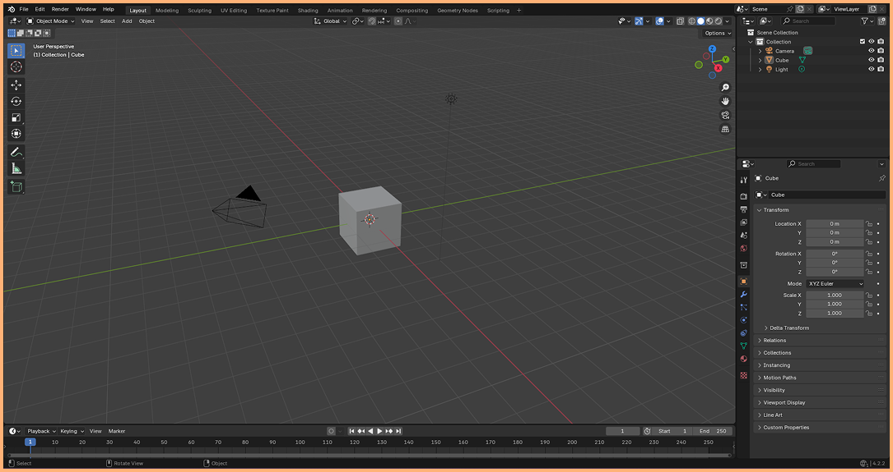

- ÚVOD
Když poprvé otevřeme Blender, přivítá nás jednoduchá scéna, která by měla vypadat podobně jako na obrázku. Tato scéna obsahuje tři základní prvky: kameru, světlo a startovní kostku – tvůj první stavební kámen v 3D prostoru.

Výchozí okno blenderu
- 3D PROSTŘEDÍ
Blender je program určený pro práci v trojrozměrném prostoru. Pro správnou orientaci je nutné znát jeho souřadnicový systém, kde každý bod ve scéně je definován třemi osami:
- • Osa X (Červená) - Reprezentuje pohyb do stran (doprava a doleva).
- • Osa Y (Zelená) - Určuje hloubku a vzdálenost (dopředu a dozadu).
- • Osa Z (Modrá) - Definuje vertikální polohu, tedy výšku (nahoru a dolů).
- POHYB V PROSTŘEDÍ
Než se pustíme do úprav objektů, je nutné si osvojit základní ovládání pohledu. Tyto tři jednoduché pohyby vám umožní komfortní navigaci ve scéně:
- • Otáčení pohledu (Orbit) - Stiskni a táhni MMB (Střední tlačítko myši - kolečko).
- • Přiblížení a oddálení (Zoom) - Pohybuj kolečkem myši dopředu a dozadu.
- • Posun pohledu do stran (Pan) - SHIFT + MMB a táhni.
- SHRNUTÍ LEKCE
- • Blender pracuje v 3D prostoru definovaném osami X , Y a Z.
- • Pro navigaci nezapomeň na MMB (otáčení), kolečko myši (zoom) a Shift + MMB (posun).
1
následující lekce >